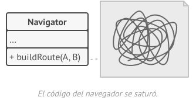

El patrón Strategy es un patrón de diseño de comportamiento que te permite definir una familia de algoritmos, colocar cada uno de ellos en una clase separada y hacer sus objetos intercambiables.
A menudo, un sistema necesita realizar una tarea que puede implementarse de varias maneras. Por ejemplo, un sistema de clasificación puede utilizar varios algoritmos de clasificación diferentes, como el algoritmo de clasificación rápida o el algoritmo de clasificación por inserción.
Una solución común a este problema es implementar todos los algoritmos en la misma clase. Sin embargo, esto puede hacer que el código sea difícil de mantener y extender.
El patrón Strategy resuelve este problema encapsulando cada algoritmo en una clase separada. El cliente luego puede seleccionar el algoritmo que desea utilizar en tiempo de ejecución.
El siguiente ejemplo muestra cómo se puede utilizar el patrón Strategy para implementar un algoritmo de clasificación.
public class Context {
private Strategy strategy;
public Context(Strategy strategy) {
this.strategy = strategy;
}
public void sort(int[] numbers) {
strategy.sort(numbers);
}
}
public interface Strategy {
void sort(int[] numbers);
}
public class QuickSortStrategy implements Strategy {
@Override
public void sort(int[] numbers) {
// Implementación del algoritmo de clasificación rápida
}
}
public class InsertionSortStrategy implements Strategy {
@Override
public void sort(int[] numbers) {
// Implementación del algoritmo de clasificación por inserción
}
}
public class Main {
public static void main(String[] args) {
Context context = new Context(new QuickSortStrategy());
int[] numbers = { 5, 2, 4, 7, 1, 3 };
context.sort(numbers);
System.out.println(Arrays.toString(numbers));
context = new Context(new InsertionSortStrategy());
context.sort(numbers);
System.out.println(Arrays.toString(numbers));
}
}
En este ejemplo, la clase Context representa el objeto que delega la ejecución del algoritmo. La interfaz Strategy define el comportamiento del algoritmo de clasificación. Las clases QuickSortStrategy e InsertionSortStrategy implementan la interfaz Strategy y proporcionan dos algoritmos de clasificación diferentes.
En el método main(), se crean dos objetos Context, uno para cada algoritmo de clasificación. Luego, se llama al método sort() en cada objeto Context para ordenar un arreglo de números.